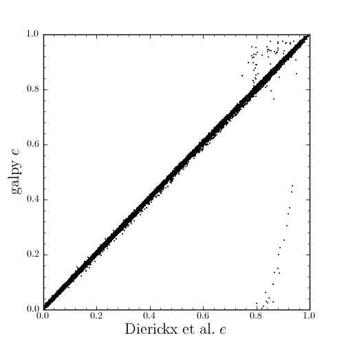

A closer look at orbit integration¶
Orbit initialization¶
Orbits can be initialized in various coordinate frames. The simplest initialization gives the initial conditions directly in the Galactocentric cylindrical coordinate frame (or in the rectangular coordinate frame in one dimension). Orbit() automatically figures out the dimensionality of the space from the initial conditions in this case. In three dimensions initial conditions are given either as vxvv=[R,vR,vT,z,vz,phi] or one can choose not to specify the azimuth of the orbit and initialize with vxvv=[R,vR,vT,z,vz]. Since potentials in galpy are easily initialized to have a circular velocity of one at a radius equal to one, initial coordinates are best given as a fraction of the radius at which one specifies the circular velocity, and initial velocities are best expressed as fractions of this circular velocity. For example,
>>> o= Orbit(vxvv=[1.,0.1,1.1,0.,0.1,0.])
initializes a fully three-dimensional orbit, while
>>> o= Orbit(vxvv=[1.,0.1,1.1,0.,0.1])
initializes an orbit in which the azimuth is not tracked, as might be useful for axisymmetric potentials.
In two dimensions, we can similarly specify fully two-dimensional orbits vxvv=[R,vR,vT,phi] or choose not to track the azimuth and initialize as vxvv=[R,vR,vT].
In one dimension we simply initialize as vxvv=[x,vx].
For orbit integration and characterization of observed stars or clusters, initial conditions can also be specified directly as observed quantities when radec=True is set. In this case a full three-dimensional orbit is initialized as vxvv=[RA,Dec,distance,pmRA,pmDec,Vlos] where RA and Dec are expressed in degrees, the distance is expressed in kpc, proper motions are expressed in mas/yr (pmra = pmra’ * cos[Dec] ), and the line-of-sight velocity is given in km/s. These observed coordinates are translated to the Galactocentric cylindrical coordinate frame by assuming a Solar motion that can be specified as either solarmotion=hogg (default; 2005ApJ...629..268H), solarmotion=dehnen (1998MNRAS.298..387D) or solarmotion=shoenrich (2010MNRAS.403.1829S). A circular velocity can be specified as vo=235 in km/s and a value for the distance between the Galactic center and the Sun can be given as ro=8.5 in kpc. While the inputs are given in physical units, the orbit is initialized assuming a circular velocity of one at the distance of the Sun.
When radec=True is set, velocities can also be specified in Galactic coordinates if UVW=True is set. The input is then vxvv=[RA,Dec,distance,U,V,W], where the velocities are expressed in km/s. U is, as usual, defined as -vR (minus vR).
Orbit integration¶
After an orbit is initialized, we can integrate it for a set of times ts, given as a numpy array. For example, in a simple logarithmic potential we can do the following
>>> from galpy.potential import LogarithmicHaloPotential
>>> lp= LogarithmicHaloPotential(normalize=1.)
>>> o= Orbit(vxvv=[1.,0.1,1.1,0.,0.1,0.])
>>> import numpy
>>> ts= numpy.linspace(0,100,10000)
>>> o.integrate(ts,lp)
to integrate the orbit from t=0 to t=100, saving the orbit at 10000 instances.
Displaying the orbit¶
After integrating the orbit, it can be displayed by using the plot() function. The quantities that are plotted when plot() is called depend on the dimensionality of the orbit: in 3D the (R,z) projection of the orbit is shown; in 2D either (X,Y) is plotted if the azimuth is tracked and (R,vR) is shown otherwise; in 1D (x,vx) is shown. E.g., for the example given above,
>>> o.plot()
gives

Other projections of the orbit can be displayed by specifying the quantities to plot. E.g.,
>>> o.plot(d1='x',d2='y')
gives the projection onto the plane of the orbit:

while
>>> o.plot(d1='R',d2='vR')
gives the projection onto (R,vR):

Orbit characterization¶
The properties of the orbit can also be found using galpy. For example, we can calculate the peri- and apocenter radii of an orbit, its eccentricity, and the maximal height above the plane of the orbit
>>> o.rap(), o.rperi(), o.e(), o.zmax()
(1.2581455175173673,0.97981663263371377,0.12436710999105324,0.11388132751079502)
We can also calculate the energy of the orbit, either in the potential that the orbit was integrated in, or in another potential:
>>> o.E(), o.E(pot=mp)
(0.6150000000000001, -0.67390625000000015)
where mp is the Miyamoto-Nagai potential of Introduction: Rotation curves.
We can also show the energy as a function of time (to check energy conservation)
>>> o.plotE()
gives

We can specify another quantity to plot the energy against by specifying d1=. We can also show the vertical energy, for example, as a function of R
>>> o.plotEz(d1='R')
Often, a better approximation to an integral of the motion is given by Ez/sqrt(density[R]). We refer to this quantity as EzJz and we can plot its behavior
>>> o.plotEzJz(d1='R')
Accessing the raw orbit¶
The value of R, vR, vT, z, vz, x, vx, y, vy, phi, and vphi at any time can be obtained by calling the corresponding function with as argument the time. If no time is given the initial condition is returned, and if a time is requested at which the orbit was not saved spline interpolation is used to return the value. Examples include
>>> o.R(1.)
1.1545076874679474
>>> o.phi(99.)
88.105603035901169
We can also initialize an Orbit instance using the phase-space position of another Orbit instance evaulated at time t. For example,
>>> newOrbit= o(10.)
will initialize a new Orbit instance with as initial condition the phase-space position of orbit o at time=10..
The whole orbit can also be obtained using the function getOrbit
>>> o.getOrbit()
which returns a matrix of phase-space points with dimensions [ntimes,ndim].
Example: The eccentricity distribution of the Milky Way’s thick disk¶
A straightforward application of galpy’s orbit initialization and integration capabilities is to derive the eccentricity distribution of a set of thick disk stars. We start by downloading the sample of SDSS SEGUE (2009AJ....137.4377Y) thick disk stars compiled by Dierickx et al. (2010arXiv1009.1616D) at
http://www.mpia-hd.mpg.de/homes/rix/Data/Dierickx-etal-tab2.txt
After reading in the data (RA,Dec,distance,pmRA,pmDec,vlos; see above) as a vector vxvv with dimensions [6,ndata] we (a) define the potential in which we want to integrate the orbits, and (b) integrate each orbit and save its eccentricity (running this for all 30,000-ish stars will take about half an hour)
>>> lp= LogarithmicHaloPotential(normalize=1.)
>>> ts= nu.linspace(0.,20.,10000)
>>> mye= nu.zeros(ndata)
>>> for ii in range(len(e)):
... o= Orbit(vxvv[ii,:],radec=True,vo=220.,ro=8.) #Initialize
... o.integrate(ts,lp) #Integrate
... mye[ii]= o.e() #Calculate eccentricity
We then find the following eccentricity distribution

The eccentricity calculated by galpy compare well with those calculated by Dierickx et al., except for a few objects
The script that calculates and plots everything can be downloaded here.